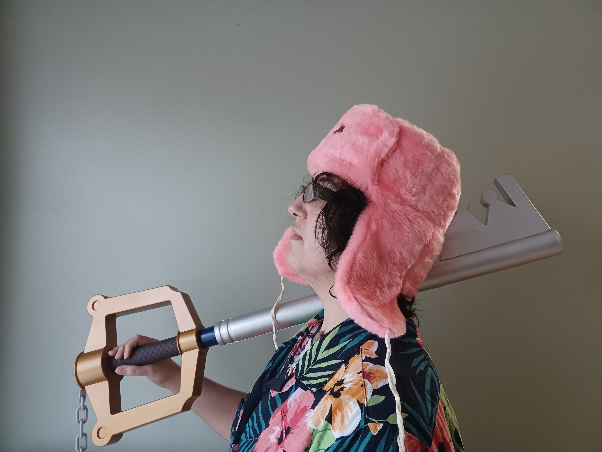

Sobre mí
Darkor_LF (Madrid, 1989) es el pseudónimo de una física que probó trabajar en investigación para descubrir que no era lo que le llenaba y ahora se gana el pan como desarrolladora web. Cuando el trabajo diario le deja se dedica a leer, jugar videojuegos y ver películas y series. Tras unos años empezó a tener opiniones al respecto y se coló en algunas páginas web.
Es redactora en la web independiente de videojuegos Todas Gamers, donde sólo colaboran mujeres y personas no binarias. Podéis leerla opinar sobre Final Fantasy, Kingdom Hearts o que el mejor minijuego de pesca está en Dark Chronicle. También es la directora del Podcast de Todas Gamers (aka, El Pugcast), donde colabora con la sección sobre Historia del Videojuego.
Además es colaboradora en La Nave Invisible, proyecto centrado en la visibilización de autoras y autores no binaries(ganadora a Mejor página web en los Premios Ignotus 2018, 2019, 2020, 2021 y 2022). Hasta junio de 2023, colaboró en la web y actualmente se encarga de colaborar en su podcast y la parte técnica del mismo. También participó en el fanzine Untitled Zines, donde cada número giraba en torno a una temática concreta.
En 2021 impulsó la recopilación de dos libros de ensayo, Todas Gamers Quinto Aniversario Vol 1. Ahora en ebook y Todas Gamers Quinto Aniversario Vol 2. Ahora con más esdrújulas. Ambos recopilan textos publicados en la página web de Todas Gamers con motivo de su quinto aniversario. Además, en el segundo volumen colabora con el artículo «Marvel’s Spiderman y la ciudad de Nueva York» y el artículo exclusivo «La loca línea temporal de Kingdom Hearts revisitada. Ahora con más lágrimas». Este libro fue finalista de los premios Ignotus 2022 a Mejor Libro de Ensayo. También forma parte del libro de ensayo La Nave Invisible. Cinco años de travesía (premio Ignotus a Mejor Libro de Ensayo 2022), con el artículo «Moto Hagio y la generación del 24». Además, fue parte del equipo seleccionador del Fabricantes de Sueños 2019-2020, junto parte de la tripulación de La Nave Invisible, para la asociación Pórtico.
En los ratos que tiene libres se dedica a escribir ficción. Actualmente cuenta con tres relatos autopublicados de la serie Los viajes de la Islandia, space opera humorística que se centra en las desventuras de la tripulación de la Vieja Islandia: Protocolos revisados definitivos V6-XVI, La ruta de la Montaña Mística Asalto a la cámara acorazada y Semana de permiso. Su otra gran obsesión escribiendo son los viajes en el tiempo, con el relato autopublicado Rebobinar, o el relato El rescate del pargo disponible en la web de la editorial Cerbero.
Tiene hiperfijaciones periódicas entre las que destacan: Hamilton, la mitología nórdica, Final Fantasy IX, Final Fantasy XV, Kingdom Hearts, la trilogía del Imperio del Radch, la saga Vorkosigan, Mundodisco, One Piece, la saga Kung Fu Panda, Psych y el Universo Marvel Cinematográfico.
Biografía corta
Antes física, ahora desarrolladora web. Es redactora en Todas Gamers, además de colaborar y dirigir El Pugcast. Forma parte de La Nave Invisible, primero en formato web y ahora en su podcast. Ha autopublicado varios relatos de space opera y viajes en el tiempo, sus dos géneros favoritos. Si dispones de un par de semanas libres, puedes preguntarle por Kingdom Hearts, la saga Vorkosigan o Final Fantasy.